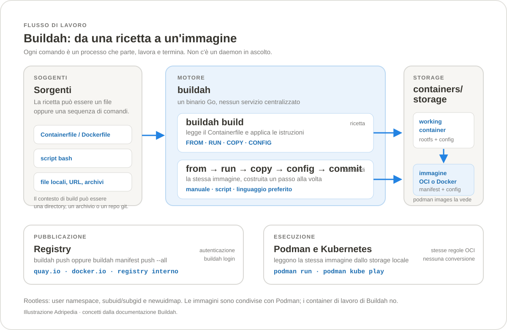
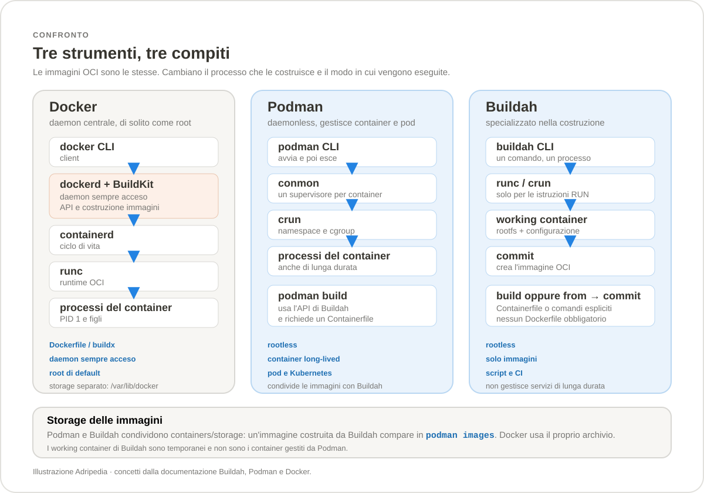

Sezione · Informatica
Buildah
Buildah costruisce immagini OCI senza daemon e senza obbligarti a un Dockerfile: può partire da una ricetta oppure assemblare l'immagine un comando alla volta. La guida spiega a cosa serve, come si usa e dove si colloca rispetto a Podman e Docker.
1.46.0
(21 ottobre 2026), licenza Apache 2.0. Fa parte del progetto
CNCF Sandbox “Podman Container Tools”
insieme a Podman e Skopeo. Podman 6.1.x include Buildah 1.45.x; la 1.46
è la release standalone più recente. Per il contesto
completo sui container restano disponibili le guide
Podman e
Docker.
Che cos'è Buildah
Buildah è uno strumento a riga di comando
che costruisce immagini nel formato OCI (e, se
serve, nel formato Docker). Non è un motore che tiene in vita
i container: è il laboratorio in cui l'immagine viene
preparata. Crea un container di lavoro, ci installa
pacchetti, copia file, imposta ambiente, comando di avvio e porte,
poi lo chiude dentro un'immagine con buildah commit.
La cosa che lo distingue da docker build è che
non ha bisogno di un daemon: ogni comando è un processo che
parte, compie il suo lavoro e termina. E non ha bisogno nemmeno di
un Dockerfile. Puoi usare un Containerfile quando la
ricetta è stabile, oppure concatenare i comandi
from, run, copy,
config e commit quando vuoi costruire
l'immagine da uno script, da un linguaggio di programmazione o da
una pipeline.
Buildah nasce nello stesso ecosistema di Podman e Skopeo e con loro
condivide le librerie di containers/storage e
containers/image. Le immagini prodotte non sono
“immagini Buildah”: sono immagini OCI standard, che
Podman, Docker, Kubernetes e qualsiasi registry accettano senza
conversioni.

Perché esiste
Costruire un'immagine e eseguirla sono due problemi diversi. Docker li ha messi nello stesso prodotto, con un daemon che fa entrambe le cose. Buildah separa il primo problema e lo espone come una collezione di comandi elementari, nello spirito delle coreutils di Unix. Da qui derivano i suoi vantaggi concreti:
- niente daemon: non c'è un servizio da avviare, aggiornare o proteggere; ogni build è un processo isolato;
- rootless: un utente normale può
costruire immagini usando i namespace utente, senza
sudo; - scriptabile: le stesse operazioni di un Dockerfile sono disponibili come comandi, quindi può essere chiamato da bash, Python, Go o da un job di CI;
- immagini minime: puoi partire da
scratche aggiungere solo ciò che serve; - nessun Docker-in-Docker: in CI si costruisce direttamente sull'host Linux o dentro un container dedicato.
Podman, a sua volta, usa l'API Go di Buildah per implementare
podman build. Quindi quando costruisci con Podman stai
già usando il motore di Buildah, anche se il comando si
chiama diversamente.
Cosa fa e cosa non fa
| Attività | Buildah | Podman | Docker |
|---|---|---|---|
| Costruire un'immagine da Containerfile | Sì, con buildah build | Sì, con podman build | Sì, con docker build |
| Costruire senza file di ricetta | Sì, con i comandi espliciti | No, serve un Containerfile | No, serve un Dockerfile |
| Eseguire un servizio di lunga durata | No: run serve per il RUN | Sì | Sì |
| Gestire pod e manifest Kubernetes | Solo manifest di immagini | Sì, con kube play | No, non è il suo scopo |
| Pubblicare su un registry | Sì, con push e manifest push | Sì | Sì |
| Montare il rootfs per modificarlo | Sì, con mount | Sì, ma non è il flusso tipico | No, non è esposto così |
L'architettura in breve
Buildah è un binario Go che parla direttamente con
containers/storage per i file system e con
containers/image per i formati e i registry. Per le
istruzioni che devono eseguire un processo, come RUN,
chiama un runtime OCI, di solito runc o
crun. Il modello è fork-exec: il
comando che digiti è il processo che coordina il lavoro, e
quando ha finito esce.
Un container di lavoro non è un container
che resta in esecuzione. È un rootfs salvato nello storage,
con una configurazione associata: lo vedi con
buildah containers, puoi montarlo con
buildah mount e lo trasformi in immagine con
buildah commit. I container di lavoro di Buildah non
compaiono in podman ps, e i container di Podman non
compaiono in buildah containers. Le immagini, invece,
sono condivise: ciò che Buildah scrive nello storage lo vede
anche Podman.
Buildah e Podman: chi fa cosa
La divisione è semplice: Buildah costruisce,
Podman esegue e gestisce. Podman incorpora il
codice di Buildah per podman build, quindi le due
strade producono lo stesso tipo di immagine. La differenza pratica
è l'interfaccia: Buildah espone i singoli passaggi della
build, Podman espone il ciclo di vita dei container.
| Aspetto | Buildah | Podman |
|---|---|---|
| Scopo principale | Costruire e manipolare immagini | Eseguire e gestire container, pod e immagini |
| Daemon | Nessuno | Nessuno |
| Container di lavoro | Sì, temporanei, visibili con buildah containers | No: i container sono servizi, visibili con podman ps |
| Build da Containerfile | buildah build | podman build, che usa Buildah |
| Build senza Containerfile | Sì | No |
| Storage delle immagini | containers/storage | containers/storage |
| Comando tipico | buildah commit | podman run |
Quando scegliere Buildah
Buildah dà il meglio di sé quando la build è parte di un'automazione o quando serve un controllo fine su ciò che finisce nell'immagine:
- pipeline CI che non vogliono un daemon né privilegi di root;
- immagini minime, costruite da
scratcho da una base ridotta, con pochi pacchetti e nessun residuo di build; - build generate da uno script, con parametri calcolati a runtime;
- immagini multi-architettura raccolte in un manifest list;
- ambienti Kubernetes in cui non si vuole esporre il socket di Docker;
- debug di un Dockerfile: eseguire le istruzioni una alla volta rende visibile ciò che il file nasconde.
Non è invece lo strumento giusto per gestire i container di tutti i giorni, per Docker Compose o per chi vuole un'interfaccia grafica: in quei casi servono Podman, Podman Desktop o Docker.
Requisiti e versioni
Buildah gira solo su Linux. Non esiste un binario
nativo per Windows o macOS: in quei sistemi si usa una macchina
Linux, una distribuzione WSL 2 oppure un container Linux. Sul kernel
servono il supporto a overlayfs (oppure
fuse-overlayfs), i namespace e un
runtime OCI come runc o crun. Per
l'uso rootless servono /etc/subuid,
/etc/subgid e i helper newuidmap e
newgidmap.
| Versione | Data | Note |
|---|---|---|
| Buildah 1.46.0 | 21 ottobre 2026 | Release stabile documentata qui. Richiede containers/storage 1.64, containers/image 5.41 e containers/common 0.69. |
| Buildah 1.45.2 | 12 ottobre 2026 | Serie inclusa in Podman 6.1.x. |
| Buildah 1.44.0 | 27 maggio 2026 | Serie richiesta da Podman 6.0. |
| Buildah 1.43.x | 2026 | Serie precedente, ancora presente in alcune distribuzioni. |
Le versioni nei repository delle distribuzioni spesso arrivano con
mesi di ritardo rispetto a monte. Prima di seguire un esempio,
controlla buildah --version: un flag può non
esistere ancora, oppure comportarsi diversamente.
Installazione su Linux
Buildah è pacchettizzato nelle principali distribuzioni. La
versione disponibile dipende dal repository: su Fedora e Arch
è in genere recente, su Debian e Ubuntu segue il ciclo della
distribuzione. Il pacchetto installa anche le dipendenze comuni,
come runc e containers-common.
| Distribuzione | Comando | Note |
|---|---|---|
| Fedora | sudo dnf install -y buildah | Disponibile nei repository ufficiali. |
| Fedora Silverblue | Già installato | Fa parte dell'immagine di base. |
| Fedora CoreOS | sudo rpm-ostree install buildah | Richiede un riavvio; in alternativa si usa podman build. |
| RHEL e CentOS Stream | sudo dnf install -y buildah | Su RHEL 7 il repository è rhel-7-server-extras-rpms. |
| Debian 12 e successivi | sudo apt update && sudo apt install -y buildah | Disponibile anche in unstable e sid. |
| Ubuntu 22.04 e successivi | sudo apt update && sudo apt install -y buildah | Pacchetto nel repository universe; su 20.04 non è disponibile. |
| Arch Linux | sudo pacman -S buildah | Segue rapidamente le release upstream. |
| openSUSE | sudo zypper install buildah | Su Kubic si usa transactional-update pkg in buildah. |
| Gentoo | sudo emerge app-containers/buildah | — |
| Raspberry Pi OS arm64 | Come Debian | Usa il repository arm64 di Debian. |
Verifica dell'installazione
Tre comandi bastano per capire se tutto è al posto giusto: la versione, lo storage e la mappatura degli utenti.
buildah --version
buildah info
buildah unshare id
buildah info restituisce un JSON con la distribuzione,
l'architettura, il driver di storage, il GraphRoot e il
RunRoot. Se rootless è
false e stai lavorando senza sudo, c'è
qualcosa da sistemare nella configurazione degli ID subordinati.
buildah info --format '{{.store.GraphDriverName}}'
buildah info --format '{{.store.GraphRoot}}'
buildah info --format '{{.host.rootless}}'Configurare l'uso rootless
Rootless significa costruire immagini come utente normale. Buildah
crea un user namespace in cui il tuo UID diventa
0 e una parte degli UID subordinati viene mappata
all'interno. Per farlo ha bisogno di due intervalli assegnati
all'utente, uno per gli UID e uno per i GID, e dei programmi
newuidmap e newgidmap forniti dal
pacchetto uidmap.
grep "$USER" /etc/subuid
grep "$USER" /etc/subgid
# se mancano gli intervalli:
sudo usermod --add-subuids 100000-165535 --add-subgids 100000-165535 "$USER"
# verifica la mappatura dentro il namespace
buildah unshare cat /proc/self/uid_map
buildah unshare cat /proc/self/gid_map
Il formato tipico è utente:100000:65536: il
primo numero è l'inizio dell'intervallo sul host, il secondo
è la quantità di ID disponibili. Se hai modificato
/etc/subuid o /etc/subgid, apri una nuova
sessione prima di riprovare: i processi già avviati possono
avere una mappatura vecchia.
uidmap. I due
helper applicano la mappatura dichiarata in
/etc/subuid e /etc/subgid. Senza di loro
buildah può fallire con newuidmap: not
found oppure con un errore di permessi durante la creazione
del namespace.
Rootless e rootful a confronto
| Aspetto | Rootless (utente normale) | Rootful (sudo buildah) |
|---|---|---|
| Storage | $HOME/.local/share/containers/storage | /var/lib/containers/storage |
| RunRoot | $XDG_RUNTIME_DIR/containers | /run/containers/storage |
| Mount del rootfs | Richiede buildah unshare | Diretto |
Rete durante RUN | pasta, in modalità user-mode | Namespace di rete completo, anche reti con nome |
| Porte sotto 1024 | Dipende da net.ipv4.ip_unprivileged_port_start | Consentite |
| Isolamento | Un errore nella build non è root sul host | La build gira con privilegi pieni |
Windows
Buildah non gira nativamente su Windows. Le strade praticabili sono tre, in ordine di semplicità:
- WSL 2: installa una distribuzione Linux e poi
Buildah al suo interno. È la soluzione più diretta
per usare il comando
buildahvero e proprio. - Macchina Podman: Podman per Windows crea una VM
Linux gestita da
podman machine. Il comandopodman buildfunziona subito e usa Buildah come motore; per il binariobuildahpuoi installarlo nella VM o nella distribuzione WSL. - Container ufficiale:
quay.io/buildah/stablecontiene Buildah e le sue dipendenze. Serve però un ambiente isolato e alcune opzioni di sicurezza aggiuntive, quindi è più adatto alla CI che al desktop.
# dentro una distribuzione WSL 2 (esempio Ubuntu)
sudo apt update
sudo apt install -y buildah
buildah --version
buildah info
Con WSL 2 non serve systemd per usare Buildah: ogni comando è
un processo. Se la build usa RUN, assicurati che la
virtualizzazione sia attiva e che la distribuzione abbia accesso
alle risorse necessarie.
macOS
Anche su macOS serve una VM Linux. Il percorso più comodo
è podman machine: crea e avvia una macchina
Linux, e da lì podman build usa Buildah.
In alternativa puoi usare una VM Linux gestita da altri strumenti,
oppure il container ufficiale. Non cercare un'installazione
“nativa”: non esiste.
podman machine init
podman machine start
podman machine ssh
# dentro la VM:
# installa buildah con il package manager della distribuzione
buildah --versionContainer ufficiale
L'immagine quay.io/buildah/stable è pensata per
eseguire Buildah dentro un container. La documentazione ufficiale
usa un container di lunga durata con accesso al device FUSE e
alcune opzioni di sicurezza allentate. È un pattern utile in
CI, ma va trattato come un ambiente fidato: non usarlo per costruire
codice non controllato.
podman pull docker://quay.io/buildah/stable:latest
podman run --rm quay.io/buildah/stable buildah version
podman run --detach --name buildahctr \
--net=host \
--security-opt label=disable \
--security-opt seccomp=unconfined \
--device /dev/fuse:rw \
-v /var/lib/mycontainer:/var/lib/containers:Z \
quay.io/buildah/stable sh -c 'while true; do sleep 100000; done'
podman exec -it buildahctr /bin/sh
# dentro il container:
buildah version
Se compare fuse: device not found, il modulo FUSE non
è caricato sul host: sudo modprobe fuse.
Aggiornare Buildah
L'aggiornamento passa dal package manager della distribuzione. Dopo l'upgrade controlla la versione e lo storage, soprattutto se cambi anche Podman: le due serie devono restare compatibili con le librerie comuni.
sudo dnf upgrade buildah
# oppure
sudo apt update && sudo apt upgrade buildah
buildah --version
buildah infobuildah, podman e
containers-common.
Disinstallare
La disinstallazione del pacchetto non cancella i dati: immagini, container di lavoro e cache restano nello storage. Se vuoi davvero ripartire da zero, rimuovi prima ciò che non ti serve e poi lo storage.
# rimuove container di lavoro e cache
buildah prune --all
# rootless
rm -rf "$HOME/.local/share/containers/storage"
# rootful
sudo rm -rf /var/lib/containers/storagebuildah push o
podman save.
Problemi comuni
| Sintomo | Causa probabile | Rimedio |
|---|---|---|
newuidmap: not found | Manca il pacchetto uidmap. | Installalo con il package manager. |
no subuid ranges o mappatura vuota | /etc/subuid e /etc/subgid non contengono l'utente. | Aggiungi gli intervalli con usermod e apri una nuova sessione. |
overlay: invalid argument | OverlayFS non utilizzabile dentro il namespace utente. | Aggiorna il kernel o usa fuse-overlayfs. |
permission denied su buildah mount | Il mount rootless richiede un namespace dedicato. | Esegui buildah unshare e ripeti il comando. |
| Nome breve non risolto | registries.conf non ha un registry predefinito. | Usa un riferimento completo o configura unqualified-search-registries. |
| Errore TLS verso un registry | Certificato non trusted o registry HTTP. | Aggiungi il certificato in /etc/containers/certs.d o segna il registry come insecure. |
--network mynet fallisce rootless | Le reti con nome sono supportate solo rootful. | Usa pasta o esegui come root. |
runc: command not found | Manca il runtime OCI. | Installa runc o configura crun. |
Digita per filtrare le tabelle e i comandi qui sotto.
Aiuto, versioni e informazioni
Buildah ha un albero di comandi ampio ma coerente. I primi tre
comandi da ricordare sono --help, version
e info: rispondono a “quali comandi esistono?”,
“che versione sto usando?” e “dove sta scrivendo?”.
| Comando | Cosa fa | Note |
|---|---|---|
buildah --version | Versione del binario | Controlla sempre prima di seguire un esempio. |
buildah version | Versione e informazioni di build | Utile nei bug report. |
buildah info | Host, storage, driver e statistiche | Il primo comando quando qualcosa non funziona. |
buildah info --format '{{.store.GraphRoot}}' | Percorso dello storage | Conferma se stai usando lo storage rootless o rootful. |
buildah --help | Elenco dei comandi | Include source, mkcw e gli altri comandi meno usati. |
buildah from --help | Opzioni di un comando | Sostituisci from con il comando che ti interessa. |
buildah unshare id | Esegue un comando nel namespace utente | Verifica la mappatura rootless. |
Immagini nello storage
Buildah non ha un demone a cui chiedere le immagini: legge
direttamente lo storage. I comandi sono vicini a quelli di Podman e
Docker, ma buildah images mostra solo ciò che
è presente nell'archivio condiviso.
| Comando | Cosa fa | Note |
|---|---|---|
buildah pull docker.io/library/alpine:3.22 | Scarica un'immagine | Il riferimento completo evita ambiguità sui nomi brevi. |
buildah images | Elenca le immagini locali | Mostra nome, tag, ID, dimensione e data. |
buildah images --all | Include anche le immagini intermedie | Utile quando usi --layers. |
buildah inspect --type image alpine:3.22 | Configurazione e manifest dell'immagine | Con --format estrai un solo campo. |
buildah tag alpine:3.22 localhost/alpine:test | Aggiunge un nome | Non duplica i layer. |
buildah rmi localhost/alpine:test | Rimuove un'immagine | Fallisce se un container di lavoro la usa. |
buildah rmi --all | Rimuove tutte le immagini | Operazione distruttiva. |
buildah rmi --prune | Rimuove le immagini non usate | Più sicuro di --all. |
buildah prune | Pulisce immagini intermedie e cache | Non tocca le immagini finali. |
buildah prune --all | Rimuove tutte le immagini senza container | Non ha una modalità di anteprima: controlla prima cosa stai usando. |
Container di lavoro
Un container di lavoro è il banco su cui costruisci
l'immagine. Esiste finché non lo rimuovi o non lo chiudi con
commit --rm. Non è un servizio: non ha un PID 1
che resta acceso.
| Comando | Cosa fa | Note |
|---|---|---|
buildah from alpine:3.22 | Crea un container di lavoro da un'immagine | Stampa il nome generato, per esempio alpine-working-container. |
buildah from --name web alpine:3.22 | Crea un container di lavoro con un nome scelto | Il nome rende gli script più leggibili. |
buildah from scratch | Crea un rootfs vuoto | Per immagini minimali; devi aggiungere tutto ciò che serve. |
buildah containers | Elenca i container di lavoro | Non mostra i container di Podman. |
buildah rename web api | Rinomina un container di lavoro | Utile negli script. |
buildah rm web | Rimuove un container di lavoro | Non rimuove l'immagine da cui è partito. |
buildah rm --all | Rimuove tutti i container di lavoro | Attenzione: perdi le modifiche non ancora committate. |
buildah mount web | Monta il rootfs e stampa il percorso | Rootless: richiede buildah unshare. |
buildah umount web | Smonta il rootfs | Da fare prima di rimuovere il container. |
buildah unshare --mount web sh | Apre una shell nel namespace con il rootfs montato | La variabile web contiene il percorso. |
Costruire a mano
Questi sono i mattoni con cui Buildah costruisce un'immagine senza Containerfile. Ogni comando agisce su un container di lavoro esistente; l'ordine conta.
| Comando | Cosa fa | Note |
|---|---|---|
buildah run web -- apk add --no-cache nginx | Esegue un comando nel rootfs | Il -- separa le opzioni di Buildah dal comando. |
buildah run --env APP_ENV=prod web -- env | Esegue con una variabile temporanea | La variabile non resta nell'immagine. |
buildah copy web index.html /usr/share/nginx/html/index.html | Copia un file o una directory | La destinazione è relativa al rootfs. |
buildah copy --chown 1000:1000 web app /app | Copia cambiando proprietario | Utile per container non-root. |
buildah add web app.tar.gz /srv | Aggiunge file, URL o archivi | Gli archivi riconosciuti vengono estratti. |
buildah add web https://example.com/file.txt /srv/file.txt | Scarica da URL | Accetta anche --checksum. |
buildah config --env APP_ENV=production web | Imposta una variabile permanente | Finisce nella configurazione dell'immagine. |
buildah config --cmd '["nginx","-g","daemon off;"]' web | Imposta il comando predefinito | È il CMD del Dockerfile, in forma exec. |
buildah config --entrypoint '["/usr/sbin/nginx"]' web | Imposta l'entrypoint | Accetta stringa o array JSON. |
buildah config --port 80/tcp web | Espone una porta | Documenta la porta; non la pubblica. |
buildah config --volume /data web | Dichiara un volume | Il volume viene creato a runtime. |
buildah config --workingdir /app web | Imposta la directory di lavoro | Corrisponde a WORKDIR. |
buildah config --user 1000:1000 web | Imposta l'utente predefinito | Buona pratica per i servizi. |
buildah config --label org.opencontainers.image.source=https://example.com web | Aggiunge una label | Utile per tracciare la provenienza. |
buildah config --healthcheck 'CMD curl -f http://localhost/ || exit 1' web | Definisce un healthcheck | Il formato è quello del Dockerfile. |
buildah commit web localhost/web:1.0 | Crea l'immagine | Il container di lavoro resta. |
buildah commit --rm web localhost/web:1.0 | Crea l'immagine e rimuove il container | Il flusso più pulito per gli script. |
buildah commit --format docker web localhost/web:1.0 | Crea un'immagine in formato Docker | Il default è OCI. |
buildah commit --squash web localhost/web:1.0 | Comprime tutto in un layer | Riduce i layer, perde la storia. |
buildah commit --timestamp 1700000000 web localhost/web:1.0 | Imposta la data di creazione | Per build riproducibili. |
Costruire da Containerfile
buildah build e il suo alias buildah bud
leggono un Containerfile o un Dockerfile e applicano le istruzioni.
È la strada da scegliere quando la ricetta deve essere
versionata e condivisa.
| Comando | Cosa fa | Note |
|---|---|---|
buildah build -t localhost/app:1.0 . | Costruisce dal Containerfile nella directory corrente | Il contesto è .. |
buildah bud -t localhost/app:1.0 . | Alias di build | Utile per script scritti prima della rinomina. |
buildah build -f Containerfile.prod -t localhost/app:1.0 . | Sceglie un file specifico | Accetta anche un URL. |
buildah build --build-arg VERSION=1.0 -t localhost/app:1.0 . | Passa un argomento di build | Deve essere dichiarato con ARG. |
buildah build --layers -t localhost/app:1.0 . | Abilita la cache dei layer intermedi | Il default di buildah build è false. |
buildah build --no-cache -t localhost/app:1.0 . | Ignora la cache | Utile per verificare una build pulita. |
buildah build --pull=always -t localhost/app:1.0 . | Aggiorna l'immagine di base | Il default è missing. |
buildah build --platform linux/arm64 -t localhost/app:arm64 . | Costruisce per un'altra architettura | Le istruzioni RUN richiedono emulazione. |
buildah build --target build -t localhost/app:debug . | Si ferma a uno stage | Utile nelle build multi-stage. |
buildah build --network host -t localhost/app:1.0 . | Usa la rete del host durante RUN | Meno isolato; usalo con consapevolezza. |
buildah build --secret id=npmtoken,src=./token -t localhost/app:1.0 . | Passa un secret alla build | Va montato con RUN --mount=type=secret. |
buildah build --ssh default -t localhost/app:1.0 . | Espone l'agente SSH | Per dipendenze private. |
buildah build --squash -t localhost/app:1.0 . | Comprime i layer | Utile per immagini piccole e semplici. |
buildah build --timestamp 1700000000 -t localhost/app:1.0 . | Data fissa per la build | Per artefatti riproducibili. |
buildah build --jobs 4 --platform linux/amd64,linux/arm64 --manifest localhost/app:multi . | Build multi-arch in parallelo | Crea direttamente un manifest list. |
buildah build --logfile build.log -t localhost/app:1.0 . | Scrive l'output su file | Comodo in CI. |
Registry e manifest
Buildah sa autenticarsi, pubblicare immagini e comporre manifest
list per le build multi-architettura. L'autenticazione usa un file
in ${XDG_RUNTIME_DIR}/containers/auth.json, non il
~/.docker/config.json di Docker.
| Comando | Cosa fa | Note |
|---|---|---|
buildah login -u utente quay.io | Accede a un registry | La password viene chiesta senza eco. |
buildah login -u utente --password-stdin quay.io | Legge la password da stdin | Adatto alla CI. |
buildah login --get-login quay.io | Mostra l'utente autenticato | Utile per verificare le credenziali. |
buildah logout quay.io | Rimuove le credenziali | — |
buildah push localhost/web:1.0 docker://quay.io/utente/web:1.0 | Pubblica un'immagine | Il prefisso docker:// è esplicito. |
buildah push --digestfile digest.txt localhost/web:1.0 docker://quay.io/utente/web:1.0 | Salva il digest | Utile per pinning e verifiche. |
buildah manifest create localhost/app:multi | Crea un manifest list | Vuoto finché non aggiungi immagini. |
buildah manifest add localhost/app:multi docker://quay.io/utente/app:amd64 | Aggiunge un'immagine | L'ordine è manifest, poi immagine. |
buildah manifest inspect localhost/app:multi | Mostra il contenuto | Controlla architetture e digest. |
buildah manifest push --all localhost/app:multi docker://quay.io/utente/app:multi | Pubblica il manifest e le immagini | --all è necessario per includere tutte le piattaforme. |
buildah manifest rm localhost/app:multi | Rimuove il manifest list | Non rimuove le immagini che contiene. |
Diagnostica e pulizia
| Comando | Cosa fa | Note |
|---|---|---|
buildah --log-level debug images | Output dettagliato | Utile per capire un errore di storage o registry. |
buildah inspect --type container web | Configurazione del container di lavoro | Mostra immagine di partenza, ambiente e metadati. |
buildah info --debug | Informazioni estese sul host | Da allegare ai bug report. |
buildah prune | Rimuove immagini intermedie e cache | Sicuro nella maggior parte dei casi. |
buildah prune --all | Pulisce tutte le immagini senza container | Controlla cosa sta usando Podman. |
buildah rm --all | Rimuove i container di lavoro | Non tocca le immagini. |
buildah rmi --prune | Rimuove le immagini non referenziate | — |
Esempio completo: da zero a immagine
Il primo esempio costruisce un'immagine nginx partendo da Alpine, senza scrivere un Containerfile. Ogni riga è un comando che potresti eseguire a mano per capire cosa succede.
ctr=$(buildah from alpine:3.22)
buildah run "$ctr" -- apk add --no-cache nginx
buildah copy "$ctr" index.html /usr/share/nginx/html/index.html
buildah config --port 80/tcp "$ctr"
buildah config --cmd '["nginx","-g","daemon off;"]' "$ctr"
buildah config --label org.opencontainers.image.title=web "$ctr"
buildah commit --rm "$ctr" localhost/web:1.0
buildah images
podman run --rm -p 8080:80 localhost/web:1.0Il secondo esempio fa la stessa cosa con un Containerfile. È la forma che conviene versionare in un repository.
# Containerfile
FROM alpine:3.22
RUN apk add --no-cache nginx
COPY index.html /usr/share/nginx/html/index.html
EXPOSE 80
LABEL org.opencontainers.image.title="web"
CMD ["nginx", "-g", "daemon off;"]buildah build -t localhost/web:1.0 .
buildah push localhost/web:1.0 docker://quay.io/utente/web:1.0Dove stanno i file
Buildah non ha un file di configurazione tutto suo: usa le convenzioni comuni degli strumenti containers. Gli stessi file sono letti da Podman e Skopeo, quindi una modifica ha effetto su tutto l'ecosistema. La precedenza va dal generale allo specifico: prima i file forniti dal pacchetto, poi quelli di sistema, infine quelli dell'utente.
| File | Percorsi principali | Cosa controlla |
|---|---|---|
containers.conf | /usr/share/containers/containers.conf, /etc/containers/containers.conf, /etc/containers/containers.conf.d/*.conf, $XDG_CONFIG_HOME/containers/containers.conf | Impostazioni del motore: runtime, ambienti, DNS, capability. |
storage.conf | /usr/share/containers/storage.conf, /etc/containers/storage.conf, $XDG_CONFIG_HOME/containers/storage.conf | Driver, graphroot, runroot, dimensioni. |
registries.conf | /etc/containers/registries.conf, /etc/containers/registries.conf.d/*.conf, $HOME/.config/containers/registries.conf | Registry da consultare per i nomi brevi, mirror, registry insicuri. |
policy.json | /etc/containers/policy.json | Policy di firma e provenienza delle immagini. |
mounts.conf | /usr/share/containers/mounts.conf, /etc/containers/mounts.conf | Mount automatici durante run e build. |
auth.json | ${XDG_RUNTIME_DIR}/containers/auth.json | Credenziali dei registry. |
Su rootless, $XDG_CONFIG_HOME vale di solito
$HOME/.config e $XDG_RUNTIME_DIR vale
/run/user/<uid>. Il percorso effettivo compare in
buildah info: è la fonte più affidabile
quando hai più configurazioni sovrapposte.
storage.conf
È il file che decide dove finiscono immagini e container di
lavoro. Il driver predefinito è overlay; se il
kernel non permette overlay dentro il namespace utente si usa
fuse-overlayfs, mentre vfs è il
ripiego che copia i file e occupa molto spazio.
# /etc/containers/storage.conf (estratto)
[storage]
driver = "overlay"
graphroot = "/var/lib/containers/storage"
runroot = "/run/containers/storage"
[storage.options.overlay]
mount_program = "/usr/bin/fuse-overlayfs"
In rootless i percorsi cambiano automaticamente:
graphroot diventa
$HOME/.local/share/containers/storage e
runroot diventa $XDG_RUNTIME_DIR/containers.
Non serve scriverli a mano, a meno che tu non voglia uno storage
separato per i test. In quel caso puoi usare
CONTAINERS_STORAGE_CONF per puntare a un file
alternativo.
buildah info --format '{{.store.GraphDriverName}}'
buildah info --format '{{.store.GraphRoot}}'
buildah info --format '{{.store.RunRoot}}'registries.conf
Quando scrivi buildah pull alpine, Buildah deve capire
da dove scaricare. registries.conf elenca i
registry da provare per i nomi non qualificati e permette di
definire mirror, prefissi e registry insicuri.
# /etc/containers/registries.conf
unqualified-search-registries = ["docker.io", "quay.io"]
short-name-mode = "enforcing"
[[registry]]
prefix = "docker.io"
location = "docker.io"
[[registry.mirror]]
location = "mirror.example.com/docker"
[[registry]]
prefix = "registry.example.com"
location = "registry.example.com:5000"
insecure = trueLe chiavi da ricordare:
unqualified-search-registries: l'ordine in cui provare i nomi brevi;short-name-mode:enforcingrifiuta i nomi ambigui,permissiveavvisa e prosegue;prefixelocation: riscrivono un nome verso un altro registry;insecure: consente HTTP o certificati non verificati, da usare solo su reti fidate;[[registry.mirror]]: un mirror alternativo, provato prima della location principale.
containers.conf
containers.conf raccoglie i default del motore. Buildah
lo legge per impostazioni come il runtime OCI, le variabili
d'ambiente e i server DNS da usare durante le build. Non è
obbligatorio modificarlo: i default funzionano nella maggior parte
dei casi.
# /etc/containers/containers.conf (estratto)
[engine]
runtime = "crun"
[engine.runtimes]
crun = ["/usr/bin/crun"]
runc = ["/usr/bin/runc"]
[containers]
env = ["TZ=Europe/Rome"]
dns_servers = ["1.1.1.1", "9.9.9.9"]
Le sezioni più utili in una build sono
[engine] per scegliere il runtime e
[containers] per ambiente e DNS. Se un comando
funziona a mano ma fallisce in CI, confronta il
containers.conf dei due ambienti: spesso la differenza
è lì.
Il file si può estendere con drop-in:
/etc/containers/containers.conf.d/*.conf vengono letti
in ordine alfabetico e sovrascrivono i valori precedenti. Per
l'utente, il percorso è
$XDG_CONFIG_HOME/containers/containers.conf.
Autenticazione ai registry
buildah login scrive le credenziali in
${XDG_RUNTIME_DIR}/containers/auth.json. È un
file separato da quello di Docker: se hai già fatto
docker login, non dare per scontato che Buildah veda
le stesse credenziali.
buildah login -u utente quay.io
buildah login --get-login quay.io
buildah logout quay.io
# file alternativo, per esempio in CI
export REGISTRY_AUTH_FILE="$PWD/auth.json"
buildah login -u "$REGISTRY_USER" --password-stdin "$REGISTRY"
In una pipeline evita di mettere la password nella riga di comando:
usa --password-stdin e un secret dell'ambiente. Il file
auth.json contiene credenziali in chiaro o token:
trattalo come un segreto e non committarlo.
policy.json
policy.json stabilisce quali immagini sono accettate in
base alla firma. Il pacchetto containers-common di
solito installa una policy permissiva
(insecureAcceptAnything), adatta a un ambiente di
sviluppo ma non a una supply chain rigorosa. Per la produzione si
usa reject come default e si elencano i registry
firmati con signedBy.
{
"default": [
{ "type": "reject" }
],
"transports": {
"docker": {
"quay.io/esempio": [
{
"type": "signedBy",
"keyType": "GPGKeys",
"keyPath": "/etc/pki/containers/esempio.pub"
}
]
}
}
}reject come default, ogni immagine non firmata viene
rifiutata, comprese quelle ufficiali che non hai elencato. È
il comportamento desiderato in produzione, ma va preparato con
chiavi e registry verificati.
mounts.conf
mounts.conf elenca file o directory montati
automaticamente durante buildah run e
buildah build. Il contenuto è disponibile per i
processi della build ma non viene salvato
nell'immagine. Si usa per credenziali temporanee, subscription o
configurazioni che non devono finire nel risultato.
# /usr/share/containers/mounts.conf
/usr/share/rhel/secrets:/run/secrets
Non è un volume: il contenuto viene copiato nello storage del
container di lavoro, non collegato con un bind mount. Per i secret
di build è spesso preferibile --secret, che
resta limitato alla singola istruzione RUN.
Variabili d'ambiente
| Variabile | Effetto | Esempio |
|---|---|---|
BUILDAH_FORMAT | Formato predefinito delle immagini | export BUILDAH_FORMAT=docker |
BUILDAH_ISOLATION | Isolamento predefinito per RUN | export BUILDAH_ISOLATION=rootless |
BUILDAH_LAYERS | Abilita la cache dei layer intermedi | export BUILDAH_LAYERS=true |
BUILDAH_HISTORY | Registra la storia delle istruzioni | export BUILDAH_HISTORY=true |
BUILDAH_RUNTIME | Runtime OCI da usare | export BUILDAH_RUNTIME=/usr/bin/crun |
BUILDAH_CPPFLAGS | Flag per il preprocessore dei Containerfile .in | export BUILDAH_CPPFLAGS="-I./include" |
REGISTRY_AUTH_FILE | Percorso alternativo di auth.json | export REGISTRY_AUTH_FILE=./auth.json |
CONTAINERS_STORAGE_CONF | Percorso alternativo di storage.conf | export CONTAINERS_STORAGE_CONF=./storage.conf |
TMPDIR | Directory per i file temporanei | Utile quando /tmp è piccolo o montato noexec. |
Esempio completo
Un setup rootless sobrio: registry predefiniti espliciti, storage standard, autenticazione separata e una build con cache. È un buon punto di partenza per un progetto che verrà costruito anche in CI.
mkdir -p "$HOME/.config/containers"
cat > "$HOME/.config/containers/registries.conf" <<'EOF'
unqualified-search-registries = ["docker.io", "quay.io"]
short-name-mode = "enforcing"
EOF
buildah info --format '{{.store.GraphRoot}}'
buildah login -u "$REGISTRY_USER" --password-stdin quay.io
export BUILDAH_LAYERS=true
buildah build --build-arg VERSION=1.0 -t localhost/app:1.0 .
buildah push localhost/app:1.0 docker://quay.io/utente/app:1.0In evidenza
I processi che lancia Buildah
Buildah non ha un daemon: il comando che digiti è un
processo che parte, lavora e termina. Durante un
RUN, però, non c'è solo Buildah:
entrano in scena un helper dello stesso binario, il runtime
OCI, il comando del container e, quando servono, la rete e il
file system rootless. Qui vediamo chi sono, chi li lancia, in
che ordine e cosa fanno.
La catena dei processi
Il caso normale è l'isolamento OCI: Buildah
prepara un bundle, lancia un runtime e gli lascia creare il
container. Il runtime non è un daemon e non resta in
esecuzione: esegue pochi comandi brevi e poi esce. Il processo che
dura per tutto il RUN è l'helper di Buildah,
che aspetta la fine del comando.
buildah # CLI: legge Containerfile, storage e config
└─ buildah-oci-runtime # re-exec dello stesso binario
├─ crun create --bundle ... --pid-file ... app
├─ crun start app
├─ /bin/sh -c "..." # init del container: è il comando RUN
│ └─ ... # dnf, apk, make, ...
├─ crun state app # ogni 100 ms, per sapere se è vivo
└─ crun delete app # pulizia finale
Le righe crun ... sono comandi brevi: compaiono e
spariscono. Se guardi con ps durante un
RUN lungo, di solito vedi
buildah-oci-runtime e il comando del container come
suo figlio; il runtime ha già finito il proprio lavoro. Al
posto di crun può esserci runc:
dipende da containers.conf e da ciò che è
installato.
In rootless la catena si allunga un po', perché Buildah deve prima entrare in uno user namespace:
buildah # processo originale
├─ newuidmap / newgidmap # se servono più mapping subuid/subgid
└─ buildah # seconda istanza, dentro lo user namespace
├─ pasta ... # rete rootless (default private)
├─ fuse-overlayfs ... # solo se l'overlay nativo non basta
└─ buildah-oci-runtime
├─ crun create/start/state/delete
└─ /bin/sh -c "..."
newuidmap e newgidmap sono helper
setuid: scrivono le mappe UID/GID del processo. Servono quando ci
sono più ID da mappare; con una mappatura singola Buildah
può scrivere i file direttamente. Se non sono installati e
la configurazione li richiede, il rootless si ferma.
Con --isolation=chroot il runtime OCI non viene
usato affatto:
buildah
└─ buildah-chroot-runtime
└─ buildah-chroot-exec
└─ /bin/sh -c "..." # dopo chroot(); nessun crun/runcÈ una modalità più leggera ma meno isolata: usa pochi namespace, forza la rete host e va riservata a build fidate o ad ambienti dove un runtime OCI non è disponibile.
Chi fa cosa
| Processo | Quando compare | Chi lo lancia | Cosa fa | Vita |
|---|---|---|---|---|
buildah | Ogni comando | La shell o l'utente | Legge configurazione e storage, interpreta il Containerfile, coordina i passaggi. | Fino alla fine del comando. |
buildah (seconda istanza) | Rootless, se serve uno user namespace | buildah stesso, con MaybeReexecUsingUserNamespace | Entra in un user namespace con le mappe UID/GID e prosegue lì il lavoro. | Tutta l'operazione. |
newuidmap, newgidmap | Rootless con più mapping subuid/subgid | containers/storage/pkg/unshare | Scrivono /proc/<pid>/uid_map e gid_map per il nuovo namespace. | Pochi istanti. |
buildah-oci-runtime | Ogni RUN con isolamento OCI | buildah via reexec | Prepara il bundle OCI, esegue create, start, state, kill e delete, sincronizza la rete e attende l'exit. | Il singolo RUN. |
crun o runc | Per create, start, state, kill, delete | buildah-oci-runtime | Crea namespace, monta il rootfs, applica cgroup, seccomp, capability, SELinux/AppArmor e avvia il processo init. | Pochi istanti per comando; l'init del container resta. |
| Comando del container | Durante il RUN | Il runtime OCI | È il PID 1 nel container: esegue l'istruzione, con i suoi figli (dnf, apk, make, ...). | La durata del RUN. |
pasta | Rootless con rete (default private) | Il processo buildah padre | Crea l'interfaccia tap, configura indirizzi, route e port forwarding senza privilegi di root. | La durata del RUN. |
netavark (o CNI) | Rootful con rete | buildah, tramite NetworkInterface.Setup | Crea bridge e veth, collega il network namespace e applica le regole di rete. | Setup e teardown, non tutto il RUN. |
aardvark-dns | Rootful, rete netavark con DNS abilitato | netavark | Risolve i nomi dei container nella rete. | Finché il DNS serve. |
fuse-overlayfs | Rootless, quando l'overlay nativo non è disponibile | containers/storage | Monta il rootfs overlay in userspace, senza richiedere overlay kernel. | Finché il mount è attivo. |
buildah-chroot-runtime, buildah-chroot-exec | Con --isolation=chroot | buildah via reexec | Preparano namespace e bind mount, fanno chroot ed eseguono il comando. | Il singolo RUN. |
storage-mountfrom | Quando lo storage monta un layer overlay | containers/storage | Helper breve che esegue il mount dell'overlay nel processo giusto. | Pochi istanti. |
Vita di un RUN, passo per passo
-
Buildah prepara il bundle OCI: rootfs,
config.json, ambiente, mount, utente, capability e seccomp. Il bundle finisce in una directory temporanea: quella indicata daTMPDIR, datmp_dirincontainers.confo, in mancanza,/var/tmp. Il RunRoot dello storage è un'altra cosa (stato e lock dei container) e lo leggi conbuildah info --format '{{.store.RunRoot}}'. -
Buildah si re-exec come
buildah-oci-runtimee gli passa la configurazione tramite una pipe. Il processo originale resta il coordinatore e non esegue direttamente il comando. -
L'helper esegue
crun create --bundle ... --pid-file ... <nome>. Il runtime crea i namespace, monta il rootfs, applica i limiti e crea il processo init; scrive il PID nel file. -
Se la rete è attiva, l'helper avvisa il padre. Il padre
apre
/proc/<pid>/ns/net, configurapastain rootless onetavark/CNI in rootful, aggiorna/etc/hostseresolv.conf, poi dà il via all'helper. -
L'helper esegue
crun start <nome>: l'init esegue il comando delRUN. Da qui in poi il comando è il PID 1 del container, con i suoi figli. -
L'helper attende con
wait4(pid)e nel frattempo interrogacrun stateogni 100 ms. Se arrivaSIGINT,SIGTERMoSIGHUP, inviacrun kill SIGKILLal container. -
All'uscita esegue
crun delete, restituisce il codice di uscita e il padre chiude la rete. Buildah aggiorna il container di lavoro e, se richiesto, scrive il layer. -
Alla fine non resta nulla in esecuzione: niente daemon, niente
shim, niente
conmon. Il prossimo comando riparte da zero.
Rootless, rootful e chroot
| Scenario | Isolamento predefinito | Rete | Storage | Processi caratteristici |
|---|---|---|---|---|
| Rootful | oci (crun/runc come root) | netavark o CNI | Overlay kernel | buildah-oci-runtime e runtime |
| Rootless | rootless (runtime dentro user namespace) | pasta; reti nominate non supportate | Overlay nativo o fuse-overlayfs | Seconda istanza buildah, newuidmap/newgidmap, pasta |
--isolation=chroot | chroot, senza runtime OCI | Rete host forzata | Lo stesso storage | buildah-chroot-runtime e buildah-chroot-exec |
In rootless Buildah re-exec sé stesso in uno user namespace
prima di fare qualsiasi cosa. Lo stesso meccanismo è usato
da buildah unshare, che entra nel namespace e poi
esegue il comando che gli passi. Se il sistema ha più ID
subordinati, entrano in gioco newuidmap e
newgidmap; controlla /etc/subuid e
/etc/subgid.
Le reti nominate non funzionano in rootless: oltre a
host e none, l'unica modalità
rootless è pasta. Da Buildah 1.44 il codice di
rete non usa più slirp4netns e la 1.46 ha
tolto anche la dipendenza residua; la chiave
default_rootless_network_cmd in
containers.conf esiste ancora, ma Buildah accetta
solo pasta.
fuse-overlayfs non è obbligatorio: di norma
viene usato solo quando l'overlay nativo non è disponibile
(o quando lo forzi in storage.conf). Puoi vedere il
driver attivo con
buildah info --format '{{.store.GraphDriverName}}';
se leggi vfs, non c'è alcun overlay e le build
saranno più lente.
Come osservarli davvero
Un RUN abbastanza lungo è il modo migliore per
vedere la catena. Crea un Containerfile minimo:
printf '%s\n' 'FROM alpine:3.22' 'RUN sleep 30' > Containerfile
buildah build -t lente .
In un secondo terminale, mentre la build è ferma nel
sleep:
ps -eo pid,ppid,user,args --forest | grep -E 'buildah|crun|runc|pasta|netavark|fuse-overlayfs'
pstree -alp "$(pgrep -n buildah)"Per vedere i comandi esatti che Buildah passa al runtime, alza il log:
buildah --log-level debug build -t lente . 2>&1 | grep -E 'Running|network|runtime'
Se hai strace, puoi seguire le chiamate che creano
processi e namespace:
strace -f -e trace=clone,clone3,execve -o /tmp/buildah.trace buildah build -t lente .
Infine, la configurazione effettiva si legge da info:
buildah info --format '{{.host.OCIRuntime}}'
buildah info --format '{{.host.rootless}}'
buildah info --format '{{.store.GraphDriverName}}'
buildah info --format '{{.store.RunRoot}}'
Con --jobs N Buildah può eseguire più
stadi in parallelo: in quel caso vedrai più alberi
buildah-oci-runtime e più runtime
contemporaneamente. Non è un daemon che resta acceso: sono
processi figli del comando di build.
Cosa Buildah non lancia
| Processo | Chi lo usa | Perché non serve a Buildah |
|---|---|---|
conmon | Podman | Buildah attende direttamente il processo con wait4; non gli serve un supervisore separato. |
containerd, containerd-shim | Docker e Kubernetes | Buildah parla direttamente con il runtime OCI, senza un daemon intermedio. |
dockerd | Docker | Buildah non ha un demone: è un comando one-shot. |
skopeo | Può essere usato a parte | Buildah usa la libreria containers/image, non il binario skopeo. |
docker-proxy | Docker | Le porte non sono il suo scopo; la rete serve solo durante il RUN. |
systemd | Il sistema, non Buildah | Buildah non crea un servizio; al massimo passa al runtime opzioni come --cgroup-parent o --cgroupns. |
iptables, nft | Gli strumenti di rete | Non li invoca direttamente: se servono regole, le gestisce netavark. |
tar, gzip | Utility esterne | Archivi e compressione sono gestiti dalle librerie Go, non da processi esterni. |
podman | Podman stesso | Buildah non ha bisogno di Podman per costruire, né lo chiama al posto tuo. |
La catena di Buildah, Podman e Docker
| Strumento | Catena tipica | Differenza chiave |
|---|---|---|
| Buildah | buildah → buildah-oci-runtime → crun/runc → comando | Niente daemon, niente conmon: Buildah è il supervisore del singolo RUN. |
| Podman | podman → conmon → crun/runc → comando | Niente daemon, ma conmon supervisiona il container anche dopo il comando. |
| Docker | docker → dockerd → containerd → containerd-shim → runc → comando | Architettura a daemon e shim; docker-proxy gestisce le porte pubblicate. |
Lo schema è semplificato: Docker può usare runtime diversi e Podman può esporre un servizio API, ma la differenza di fondo resta. Buildah costruisce e basta: quando il comando finisce, la catena è già chiusa.
Se qualcosa non parte
- Runtime mancante: controlla
buildah info --format '{{.host.OCIRuntime}}'e installa il binario indicato, oppure usa--runtime. pastamancante: la rete rootless non parte; installapastaoppure usa--network=hosto--network=none.fuse-overlayfsmancante: se l'overlay nativo non è disponibile, installalo o passa avfs, accettando build più lente.newuidmap/newgidmapmancanti: installa il pacchettouidmape controlla/etc/subuide/etc/subgid.- Container rimasti:
buildah containersmostra i container di lavoro;buildah rmli elimina ebuildah prunepulisce le immagini non più usate.
Fonti verificate:
Buildah run_common.go,
Buildah run_linux.go,
Buildah chroot/run_common.go,
containers/storage unshare.
Dentro Buildah
Buildah è un programma Go che usa alcune librerie
fondamentali dell'ecosistema containers:
containers/storage per gestire i file system,
containers/image per leggere e scrivere manifest,
containers/common per la configurazione e un
image builder per interpretare i Containerfile. Quando deve
eseguire un processo chiama un runtime OCI, di solito
runc o crun.
Il modello è fork-exec: non c'è un servizio che aspetta richieste. Il comando che digiti apre lo storage, prepara il container di lavoro, esegue ciò che gli hai chiesto e termina. Questa scelta ha due conseguenze pratiche: non c'è un daemon da aggiornare o proteggere, e ogni operazione è isolata dalle altre.
Un container di lavoro è composto da un
rootfs e da una configurazione. Il rootfs è una directory
nello storage; la configurazione contiene ambiente, comando,
entrypoint, porte, label e le altre impostazioni che finiranno
nell'immagine. buildah commit impacchetta i due pezzi
in un manifest e in un file di configurazione OCI, poi li scrive
nello storage con un nome e un tag.
buildah build non è un mondo separato: legge il
Containerfile, traduce ogni istruzione nei primitivi che abbiamo
appena visto e alla fine crea l'immagine. La differenza è
solo il livello di astrazione. Se una build fallisce, puoi spesso
riprodurre il passaggio a mano con from,
run e copy per capire quale istruzione
non funziona.
Costruire da zero, a mano
“Da zero” può voler dire due cose: senza
Containerfile, ma con un'immagine di base, oppure davvero da un
rootfs vuoto. La prima è la più comune; la seconda
serve per immagini minimali e richiede un eseguibile statico o
un'installazione fatta con dnf --installroot.
Senza Containerfile, con una base
# 1. crea il container di lavoro
ctr=$(buildah from alpine:3.22)
# 2. installa i pacchetti
buildah run "$ctr" -- apk add --no-cache nginx
# 3. copia i file dell'applicazione
buildah copy "$ctr" index.html /usr/share/nginx/html/index.html
# 4. configura l'immagine
buildah config --port 80/tcp "$ctr"
buildah config --cmd '["nginx","-g","daemon off;"]' "$ctr"
buildah config --label org.opencontainers.image.title=web "$ctr"
# 5. crea l'immagine e rimuove il container di lavoro
buildah commit --rm "$ctr" localhost/web:1.0
Ogni passaggio è verificabile: dopo from puoi
eseguire buildah containers; dopo run
puoi montare il rootfs con buildah mount e guardare
dentro; dopo commit puoi controllare con
buildah images e buildah inspect.
Davvero da scratch
# hello deve essere un binario statico
ctr=$(buildah from scratch)
buildah copy "$ctr" ./hello /hello
buildah config --entrypoint '["/hello"]' "$ctr"
buildah commit --rm "$ctr" localhost/hello:1.0
Un'immagine da scratch non contiene shell, package
manager né certificati: contiene solo ciò che hai
copiato. È il modo per ottenere immagini molto piccole, ma
anche il più esigente: se il binario non è statico,
non partirà.
Costruire con un Containerfile
Il Containerfile ha la stessa sintassi di un Dockerfile. Buildah
accetta sia il nome Containerfile sia
Dockerfile, e con -f puoi indicare un
percorso o un URL. Il vantaggio rispetto ai comandi a mano è
che la ricetta è un artefatto versionabile e riproducibile.
# Containerfile multi-stage
FROM golang:1.25-alpine AS build
WORKDIR /src
COPY . .
RUN CGO_ENABLED=0 go build -o /out/app ./cmd/app
FROM gcr.io/distroless/static-debian12
COPY --from=build /out/app /app
USER 65532:65532
ENTRYPOINT ["/app"]buildah build --layers -t localhost/app:1.0 .
buildah build --build-arg VERSION=1.0 -t localhost/app:1.0 .
buildah inspect --type image localhost/app:1.0Il multi-stage è particolarmente utile con Buildah: lo stage di compilazione può contenere toolchain, compilatori e dipendenze, mentre l'immagine finale copia solo il binario. In questo modo la superficie d'attacco si riduce e l'immagine pesa molto meno.
Per le build multi-architettura si usa --platform con
una lista di piattaforme e --manifest per raccogliere
i risultati:
buildah build \
--jobs 4 \
--platform linux/amd64,linux/arm64 \
--manifest localhost/app:multi \
.
buildah manifest inspect localhost/app:multi
buildah manifest push --all localhost/app:multi docker://quay.io/utente/app:multi
Le istruzioni RUN per un'architettura diversa da quella
del host richiedono un emulatore (per esempio QEMU) oppure una
build nativa su un nodo di quell'architettura. Senza di essi la
build si ferma, e il messaggio d'errore non sempre lo dice
chiaramente.
Layer, cache e build riproducibili
Qui c'è una differenza che sorprende chi arriva da Podman:
buildah build ha --layers disattivato per
default, mentre podman build lo ha attivo. Senza
layer intermedi Buildah produce l'immagine finale ma non conserva
la cache di ogni istruzione; con --layers ogni
passaggio diventa un'immagine intermedia riutilizzabile.
| Comando | Cache intermedi | Quando usarlo |
|---|---|---|
buildah build -t app . | No | Build una tantum, script semplici. |
buildah build --layers -t app . | Sì | Build ripetute, CI, sviluppo locale. |
buildah build --layers --cache-from registry/cache --cache-to registry/cache -t app . | Sì, anche remota | Cache condivisa tra runner. |
buildah build --no-cache -t app . | No | Verifica che la build sia completa. |
La cache remota richiede --layers: senza di essa
--cache-from viene ignorato. Per una build
riproducibile, oltre alla cache, fissa la data di creazione e i
riferimenti delle immagini:
buildah build \
--layers \
--timestamp 1700000000 \
--pull=never \
-t localhost/app:1.0 .
buildah push --digestfile app.digest localhost/app:1.0 docker://quay.io/utente/app:1.0
cat app.digestIl pinning per digest è il modo più solido per garantire che due build usino esattamente la stessa base. Un tag può cambiare; un digest no.
Rootless in pratica
Rootless non significa “senza permessi”: significa che
i permessi sono confinati in un namespace utente. Il tuo UID sul
host, per esempio 1000, viene mappato a
0 dentro la build; un intervallo di UID subordinati
copre gli altri utenti. Il kernel applica la mappatura, quindi un
processo che dentro il container sembra root non lo è sul
host.
buildah unshare cat /proc/self/uid_map
buildah unshare cat /proc/self/gid_map
# esempio di output
# 0 1000 1
# 1 100000 65536
La prima colonna è l'ID dentro il namespace, la seconda
l'ID sul host, la terza la lunghezza dell'intervallo. Se la seconda
riga manca, /etc/subuid o /etc/subgid
non sono configurati per il tuo utente.
Due attenzioni pratiche:
buildah mountnon funziona direttamente come utente normale: servebuildah unshare, che apre un namespace e monta il rootfs al suo interno;- la rete durante
RUNusapastain modalità user-mode; le reti con nome e alcune configurazioni avanzate restano rootful.
Per un uso quotidiano rootless, lo storage predefinito è
$HOME/.local/share/containers/storage. Se hai bisogno
di isolare un progetto, puoi puntare a un altro
storage.conf con
CONTAINERS_STORAGE_CONF, senza toccare le immagini
condivise.
Sicurezza
Buildah riduce la superficie d'attacco perché non espone un daemon e può girare rootless. Non è però automaticamente sicuro: la sicurezza dipende da cosa esegui durante la build, da quali privilegi concedi e da come verifichi ciò che scarichi.
- non usare root se non serve: una build rootless limita i danni di un errore o di una dipendenza compromessa;
- niente segreti nell'immagine: usa
--secreteRUN --mount=type=secret; copiare un token e cancellarlo in un layer successivo non lo rimuove dalla storia; - immagini minime: meno pacchetti, meno vulnerabilità;
- capability e seccomp: non aggiungere
--cap-addo--privilegedper comodità; - SELinux o AppArmor: lascia attivi i profili del host quando disponibili;
- firma e policy: verifica le immagini con
policy.jsone pinna i digest; - container ufficiale: l'immagine di Buildah per
la CI richiede opzioni che riducono l'isolamento
(
seccomp=unconfined,label=disable,/dev/fuse): usala solo su codice fidato.
# secret montato solo durante il RUN, non salvato nell'immagine
buildah build --secret id=npmtoken,src=./token -t localhost/app:1.0 .
# nel Containerfile:
# RUN --mount=type=secret,id=npmtoken \
# NPM_TOKEN=$(cat /run/secrets/npmtoken) npm ciBuildah in CI
In una pipeline Linux, Buildah elimina la necessità di Docker-in-Docker. Il runner deve avere un kernel con namespace e overlay (o FUSE), e l'utente della CI deve avere subuid/subgid configurati. Se il runner è un container, servono le stesse opzioni dell'immagine ufficiale.
#!/usr/bin/env bash
set -euo pipefail
export BUILDAH_LAYERS=true
IMAGE="quay.io/utente/app"
buildah build \
--layers \
--build-arg VERSION="$CI_COMMIT_SHA" \
-t "$IMAGE:$CI_COMMIT_SHA" \
-t "$IMAGE:latest" \
.
printf '%s' "$REGISTRY_PASSWORD" | \
buildah login -u "$REGISTRY_USER" --password-stdin quay.io
buildah push "$IMAGE:$CI_COMMIT_SHA"
buildah push "$IMAGE:latest"Per velocizzare le build ripetute si può usare una cache remota. Il principio è lo stesso di BuildKit, ma i flag sono quelli di Buildah:
buildah build \
--layers \
--cache-from "$CACHE_IMAGE" \
--cache-to "$CACHE_IMAGE" \
-t "$IMAGE:$CI_COMMIT_SHA" \
.
Per le build multi-architettura, la strada più lineare è
costruire su un runner della piattaforma nativa e unire i
risultati in un manifest, oppure usare --platform con
QEMU se le istruzioni RUN devono essere emulate.
Buildah, Podman e Docker
I tre strumenti non sono in competizione diretta: coprono aree diverse dello stesso ecosistema. La tabella seguente riassume le differenze che contano davvero quando devi scegliere.

| Aspetto | Buildah | Podman | Docker |
|---|---|---|---|
| Scopo | Costruire immagini | Eseguire e gestire container | Costruire ed eseguire container |
| Daemon | No | No | Sì, dockerd |
| Rootless predefinito | Sì, se l'utente è configurato | Sì, per l'utente normale | Possibile, non predefinito |
| Build da Containerfile | buildah build | podman build (usa Buildah) | docker build / buildx |
| Build senza file di ricetta | Sì | No | No |
| Container di lunga durata | No | Sì | Sì |
| Pod e manifest Kubernetes | Solo manifest di immagini | Sì, kube play | No |
| Compose | No | Tramite podman compose | Sì, Docker Compose |
| Multi-arch | --platform e manifest | Manifest e buildx-like | buildx |
| Storage immagini | containers/storage | containers/storage | /var/lib/docker |
| Uso tipico | CI, script, immagini minimali | Produzione Linux, pod, systemd | Sviluppo e produzione con Docker Desktop |
La riga sullo storage è la più importante per capire l'integrazione: Podman e Buildah condividono le immagini, quindi puoi costruire con Buildah e avviare subito con Podman. Docker, con il suo archivio separato, non vede le immagini di Buildah e viceversa.
Buildah 1.46 e compatibilità
La release 1.46.0 è del 21 ottobre 2026. Aggiorna le
dipendenze a containers/storage 1.64, containers/image 5.41 e
containers/common 0.69, e aggiunge alcuni dettagli utili a chi
scrive Containerfile complessi: --include per
add e copy, --required-path,
--umask per run, il supporto a
--keep-git-dir in ADD e le cache mount
con sharing=private.
Sul fronte delle rimozioni, la 1.46 ha eliminato la dipendenza da
slirp: la rete rootless passa da pasta. È
la stessa direzione presa da Podman 6, che ha rimosso CNI,
iptables e slirp4netns.
| Podman | Buildah richiesto o incluso | Note |
|---|---|---|
| Podman 6.0 | Buildah 1.44.0 | Requisito minimo della major. |
| Podman 6.1.x | Buildah 1.45.x | Serie stabile attuale. |
| Buildah standalone 1.46.0 | — | Release più recente; non forzare Podman 6.1 a usarla se il pacchetto non lo prevede. |
containers/storage e
containers/common: sono il punto in cui i disallineamenti
si manifestano.
Arrivare da docker build
La migrazione è spesso più semplice di quanto sembri: il Containerfile resta valido e cambia il comando. Le differenze da conoscere sono poche ma importanti.
| Docker | Buildah | Differenza |
|---|---|---|
docker build -t app . | buildah build -t app . | Stessa sintassi del Containerfile. |
docker buildx build --platform ... | buildah build --platform ... | Buildah usa --manifest per raccogliere le piattaforme. |
docker push app | buildah push app docker://registry/app | Il trasporto va specificato. |
docker login | buildah login | File di autenticazione diverso. |
| Cache dei layer attiva | --layers esplicito | Il default di buildah build è disattivato. |
| Formato Docker predefinito | Formato OCI predefinito | --format docker se serve. |
--load verso il daemon | Non esiste | L'immagine è già nello storage locale. |
docker context | Non esiste | Buildah lavora sempre sullo storage locale dell'host. |
Un flusso di migrazione realistico è questo: sostituisci
docker build con buildah build --layers,
lascia il Containerfile com'è, verifica che l'immagine
compaia in podman images e avvia i container con
Podman. Se usavi docker compose, tieni presente che
podman compose è un wrapper e richiede un
provider esterno.
Domande frequenti
Buildah sostituisce Podman?
No. Buildah costruisce immagini; Podman le esegue e gestisce container, pod, volumi e reti. Podman usa Buildah per la build, quindi i due si completano invece di sovrapporsi.
Serve root per usare Buildah?
No, se l'utente ha subuid/subgid configurati e i helper
newuidmap/newgidmap installati. Rootful
resta utile per alcune operazioni, come i mount e le reti con nome,
ma non è il punto di partenza consigliato.
Posso usare un Dockerfile?
Sì. Buildah accetta Containerfile e
Dockerfile; la sintassi è la stessa. Puoi anche
indicare un file con -f o un URL.
Buildah funziona su Windows o macOS?
Non in modo nativo. Serve una macchina Linux: WSL 2 su Windows,
una VM Linux su macOS, oppure il container ufficiale. In alternativa
si usa podman build, che passa comunque dal motore di
Buildah dentro la macchina Linux.
Dove finiscono le immagini?
Nello storage di containers/storage: rootless in
$HOME/.local/share/containers/storage, rootful in
/var/lib/containers/storage. Il percorso esatto lo
stampa buildah info.
Podman vede le immagini costruite da Buildah?
Sì, perché usano lo stesso storage. Non vede invece i container di lavoro di Buildah: quelli sono un concetto interno alla build e non sono container gestiti da Podman.
buildah commit pubblica l'immagine?
No: la scrive nello storage locale. Per pubblicarla serve
buildah push, eventualmente dopo
buildah login.
Perché la seconda build è lenta?
Probabilmente manca --layers. Senza cache dei layer
intermedi Buildah rifà ogni passaggio. Aggiungi
--layers, oppure imposta
BUILDAH_LAYERS=true.
Posso costruire per un'altra architettura?
Sì, con --platform. Se la build contiene
RUN, serve un emulatore o un host di quell'architettura.
Per un risultato pubblicabile, raccogli le immagini in un manifest
con --manifest e buildah manifest push --all.
Buildah fa parte della CNCF?
Sì. Insieme a Podman e Skopeo fa parte di Podman Container Tools, progetto CNCF Sandbox dal 21 gennaio 2025. La licenza è Apache 2.0.
Dove trovo la documentazione aggiornata?
Il sito del progetto è
buildah.io;
i manuali dei comandi sono nel repository e si leggono anche con
buildah <comando> --help. Per una versione
installata, l'aiuto locale è spesso più preciso di un
articolo scritto mesi prima.
buildah --version, buildah info e
buildah <comando> --help: nella maggior parte dei
casi la risposta è in uno di questi tre output.